1 Principle of relativity
In this lecture we will begin our journey by building the foundations for any theory of relativity and establish what it means for a physical theory to covariant.
1.1 The setting
One of the most basic purposes of physics is to model events, that is points in space and time. We do this by assigning spatial coordinates \(x,y,z\) with respect to some Cartesian coordinate system and a time \(t\) according to some clock we possess. In doing this we have constructed a reference frame for our observations, as depicted here:
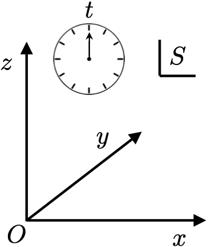
Let’s consider two such reference frames \(S\) and \(\bar{S}\) moving at a constant speed relative to each other. We will assume \(S\) is an inertial frame. It is always possible for an observer to establish whether they are inertial by examining if objects they observe appear to be subject to additional fictious forces (like the Coriolis force, the centrifugal force, and the Euler force). If present this indicates that their frame is accelerating and hence non-inertial. In this course we will be exclusively concerned with inertial frames, however for those going on to do General Relativity you will be dealing with non-inertial frames.
For any event \(P\) we have two different space-time coordinates: \[ (t,x,y,z) \in S,\] \[ (\bar{t},\bar{x},\bar{y},\bar{z}) \in \bar{S}.\]
For simplicity we will consider the standard configuration of these frames where their axes are aligned with each other and their origins coincide at time \(t=\bar{t}=0\), as depicted here:
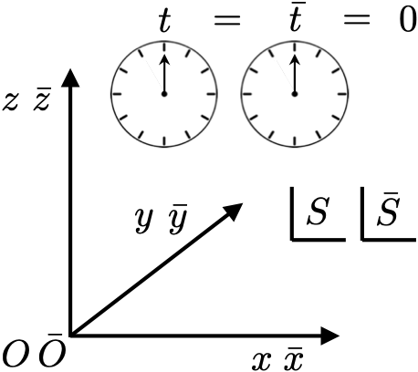
We will assume \(\bar{S}\) is moving at a speed \(v\) along the \(x\)-axis, so \(y = \bar{y}\) and \(z = \bar{z}\) at all times. At some later time \(t>0\) the two frames will be arranged like this:
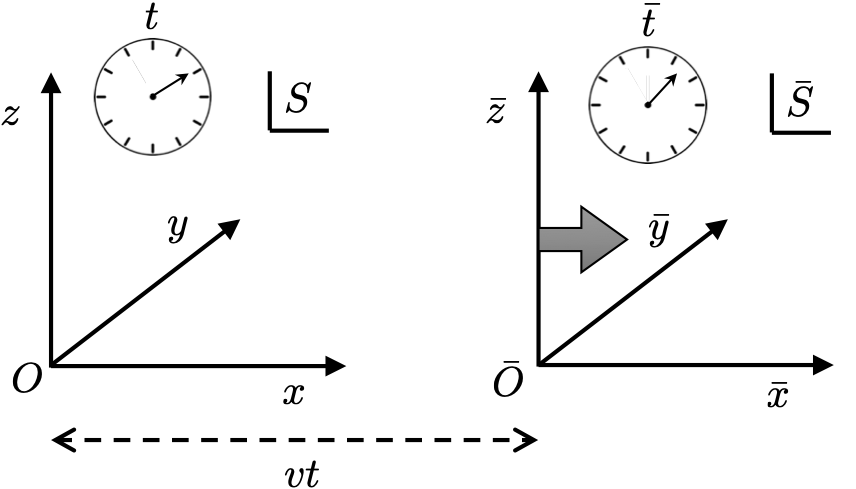
This principle is telling us that there is nothing special about or privileged about any particular inertial frame. The “mathematical form” of a theory are the equations of motion of its constituents (fields and/or particles). The quantities and coordinates involved in those equations can be different between frames, but the mathematical relationship between them is the same. In this case we say a theory is relativistically covariant. Some physical quantities may turn out to be relativistically invariant, meaning their value is identical in all inertial frames.
1.2 1+1D space-time diagrams
Since our standard configuration aligns the \(y\) and \(z\) axes of the two frames we can drop them from our considerations for the time being. This reduction to 1 dimension of space \(x\) also assists us in drawing an axis for time \(t\) making 1+1D space-time diagram. Consider the point \(P\) representing the spatial origin of frame \(\bar{S}\) represented in frame \(S\):
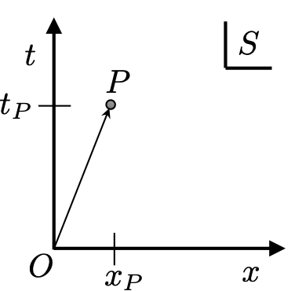
The space-time coordinates of point \(P\) in \(S\) are then
\[P \rightarrow \left( \begin{array}{c} t_P\\ x_P \end{array} \right) = \left( \begin{array}{c} t_P\\ vt_P \end{array} \right),\]
where we have used that \(x_P = vt_P\). In frame \(\bar{S}\) the same point lies along the time axis
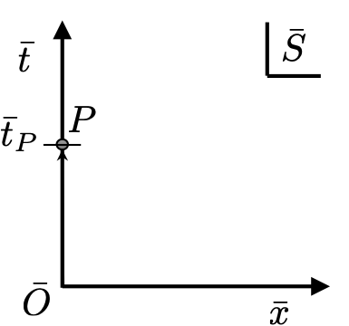
and has coordinates
\[P \rightarrow \left( \begin{array}{c} \bar{t}_P\\ 0 \end{array} \right),\]
reflecting that it is the spatial origin of this frame. Conversely we can consider a point \(Q\) being the spatial origin of frame \(S\) in the two frames also:
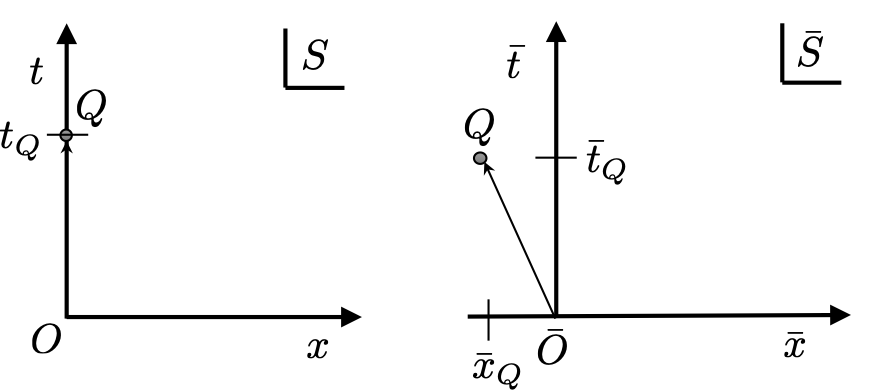
The space-time coordinates of point \(Q\) in \(S\) are then
\[Q \rightarrow \left( \begin{array}{c} t_Q\\ 0 \end{array}\right),\]
while in \(\bar{S}\) it is
\[Q \rightarrow \left( \begin{array}{c} \bar{t}_Q\\ -v\bar{t}_Q \end{array}\right),\]
where we have used that frame \(\bar{S}\) observes \(S\) moving with a speed \(-v\) along the \(\bar{x}\) axis. These statements about the space-time points \(P\) and \(Q\) are true of any theory of relativity. We will use these points later to derive properties of the special theory of relativity. For now we simply recognise that the same point in space-time possesses different space and time coordinates in different frames.
1.3 Theories of relativity
Any theory of relativity should provide us with a means of finding transforming the coordinates of a point in space-time between frames. Specifically, we expect that the coordinates in \(\bar{S}\) are functions of those in \(S\) as:
\[\bar{x} = \bar{x}(t,x), \quad \bar{t} = \bar{t}(t,x)\]
What can we say about these functions in general? These functions should be linear in both \(x\) and \(t\). Recall that a linear function of two variables \(f(p,q)\) obeys additivity:
\[f(p+a,q+b) = f(p,q) + f(a,b).\]
and homogeneity:
\[f(\alpha p,\alpha q) = \alpha f(p,q),\]
where \(\alpha\) is a scalar. Requiring linearity follows from the assumption that space-time is homogeneous. This means that space-time is the same at every point, so the spatial distance between two space-time points in one frame should not depend on their location in space-time.
Take two points \(M\) and \(N\) along the \(x\)-axis in \(S\) separated by a length \(L\):
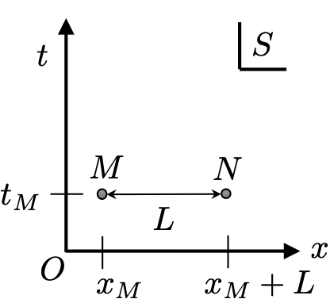
The space-time coordinates of these points in \(S\) are:
\[M \rightarrow \left( \begin{array}{c} t_M\\ x_M \end{array}\right), \quad N \rightarrow \left( \begin{array}{c} t_M\\ x_M+L \end{array}\right).\]
Using the transformation functions the coordinates of these points in \(\bar{S}\) are:
\[M \rightarrow \left( \begin{array}{c} \bar{t}_M\\ \bar{x}_M \end{array}\right) =\left( \begin{array}{c} \bar{t}(t_M,x_M)\\ \bar{x}(t_M,x_M) \end{array}\right),\]
and
\[N \rightarrow \left( \begin{array}{c} \bar{t}_N\\ \bar{x}_N \end{array}\right) = \left( \begin{array}{c} \bar{t}(t_M,x_M+L) \\ \bar{x}(t_M,x_M+L) \end{array}\right).\]
Now consider the spatial separation \(\bar{L}\) of the two points in \(\bar{S}\):
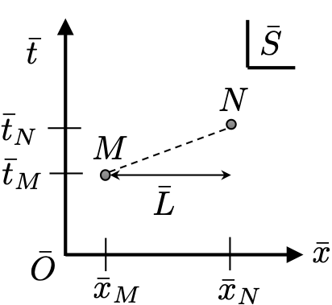
It follows that \(\bar{L}\) is
\[\bar{L} = \bar{x}(t_M,x_M+L) - \bar{x}(t_M,x_M).\]
But linearity means that \(\bar{x}(t_M,x_M+L) = \bar{x}(t_M,x_M) + \bar{x}(0,L)\), hence
\[\bar{L} = \bar{x}(0,L),\]
which, crucially, is independent on \(x_M\) and \(t_M\). Only linearity can guarantee this. With it, irrespective of where the pair of points are located along the \(x\)-axis in \(S\), their spatial separation in \(\bar{S}\) remains the same.
Being linear means that the relation between coordinates in \(S\) and \(\bar{S}\) can be expressed as matrix \(\mathbf{T}\):
\[\left( \begin{array}{c} \bar{t}\\ \bar{x} \end{array}\right) = \left(\begin{array}{c} At + Bx \\ Ct + Dx \end{array}\right) = \left(\begin{array}{cc} A & B \\ C & D \end{array}\right)\left( \begin{array}{c} t\\ x \end{array}\right) = {\mathbf{T}} \left( \begin{array}{c} t\\ x \end{array}\right),\]
where \(A,B,C\) and \(D\) are coefficients which we expect to be functions of the only other parameter, \(v\), of the problem.
We are going to frequently encounter situations where we need to transform a function of space and time, like \(f(\boldsymbol{r},t)\), between reference frames. Formally this begins by specifying how coordinates in frame \(S\) are related to those in another frame \(\bar{S}\) via some transformation matrix \(\mathbf{T}\) as
\[\left( \begin{array}{c} \bar{t} \\ \bar{\boldsymbol{r}} \end{array} \right) = {\mathbf{T}} \left( \begin{array}{c} t \\ \boldsymbol{r} \end{array} \right).\]
Next we fix the function \(\bar{f}(\bar{\boldsymbol{r}},\bar{t})\) in \(\bar{S}\) by stating that the transformed function evaluated at the transformed coordinate must equal \(f(\boldsymbol{r},t)\) in \(S\), i.e. the untransformed function at the untransformed coordinates. The reason for this is that we are not changing the function, we are just changing our coordinate system, and however we do this we should get the same answer for the same point in space-time. This is depicted here:
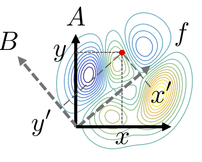
By writing the space-time arguments of the function as a vector we have \[f(\boldsymbol{r},t) = f\left({\mathbf{T}}^{-1}\left( \begin{array}{c} \bar{t} \\ \bar{\boldsymbol{r}} \end{array} \right)\right) = \bar{f}(\bar{\boldsymbol{r}},\bar{t}).\] This makes it clear that \(\bar{f}(\bar{\boldsymbol{r}},\bar{t})\) is the function arising when \(f(\boldsymbol{r},t)\) has its space-time arguments inverse-transformed into frame \(\bar{S}\). We will denote this as \(\bar{f}(\bar{\boldsymbol{r}},\bar{t})\), with the extra \(\bar{\cdot}\) on the \(f\), to make it explicitly clear this is not just \(f(\boldsymbol{r},t)\) with its variables renamed. The transformation \(\mathbf{T}\) could be a Galilean boost \(\mathbf{\Gamma}(v)\) or a Lorentz boost \(\mathbf{\Lambda}(v)\).
1.4 Galilean relativity
Let’s consider the simplest and most familiar theory of relativity, Galilean relativity. This theory is based on the common sense assertion that time is universal to all observers, so \(t = \bar{t}\). In other words all observers agree when events are simultaneous. The implications of this are revealed by considering the transformation of the point \(P\) from earlier:
\[\left( \begin{array}{c} \bar{t}_P\\ 0 \end{array}\right) = \left(\begin{array}{cc} A & B \\ C & D \end{array}\right)\left( \begin{array}{c} t_P\\ vt_P \end{array} \right) = \left( \begin{array}{c} (A+vB)t_P \\ (C+vD)t_P \end{array}\right).\]
Fixing \(t_P = \bar{t}_P\) the above relations imply that \(B = (1-A)/v\), and \(C = -vD\). Taking this and considering the relations between coordinates of the point \(Q\) in frames \(S\) and \(\bar{S}\)
\[\left( \begin{array}{c} \bar{t}_Q\\ -v\bar{t}_Q \end{array}\right) = \left(\begin{array}{cc} A & (1-A)/v \\ -vD & D \end{array}\right)\left( \begin{array}{c} t_Q\\ 0 \end{array} \right) = \left( \begin{array}{c} t_Q \\ -vDt_Q \end{array}\right).\] we constrain \(A = 1\), meaning \(B=0\), in order to obtain \(\bar{t}_Q = t_Q\) and from this \(D=1\). We then arrive at the Galilean transformation \[{\boldsymbol{\Gamma}}(v) = \left(\begin{array}{cc} 1 & 0 \\ -v & 1 \end{array}\right),\]
which, as it must be, is a function of \(v\). Writing out the transformation explicitly gives
\[\left( \begin{array}{c} \bar{t}\\ \bar{x} \end{array}\right) = \left(\begin{array}{cc} 1 & 0 \\ -v & 1 \end{array}\right)\left( \begin{array}{c} t\\ x \end{array} \right) = \left( \begin{array}{c} t \\ x - vt \end{array}\right),\]
hence the position in \(\bar{S}\) is just the position in \(S\) minus the distance travelled. By inverting the \(2 \times 2\) matrix \({\boldsymbol{\Gamma}}(v)\) is it straightforward to show that:
\[{\boldsymbol{\Gamma}}^{-1}(v) = {\boldsymbol{\Gamma}}(-v) = \left(\begin{array}{cc} 1 & 0 \\ v & 1 \end{array}\right),\]
so the reverse transformation follows as:
\[\left( \begin{array}{c} t\\ x \end{array}\right) = \left( \begin{array}{c} \bar{t} \\ \bar{x} + v\bar{t} \end{array}\right),\]
as expected. Notice that for Galilean relativity not only do all inertial observers agree on the universal time \(t\), they also agree on the spatial distance between points \(M\) and \(N\) as \(\bar{L} = \bar{x}(0,L) = L\).
Netwonian mechanics is a Galilean covariant theory. Take two masses \(m\) coupled by a spring with a constant \(k\):
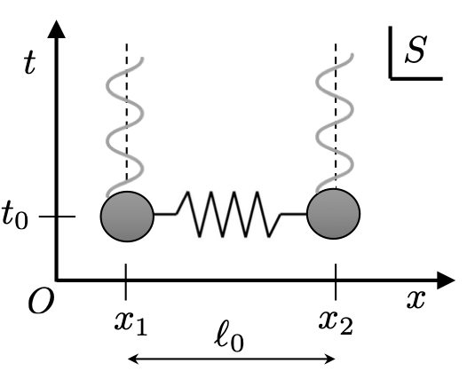
Using \(F = ma\) and \(F = -kx\) the equations of motion of the masses in frame \(S\) are:
\[m\frac{\textrm{d}^2}{\textrm{d}t^2}x_1(t) = k(x_2(t) - x_1(t) - \ell_0),\] \[m\frac{\textrm{d}^2}{\textrm{d}t^2}x_2(t) = k(x_1(t) - x_2(t) + \ell_0),\]
Transforming the coordinates \(t,x_1(t)\) and \(x_2(t)\) into frame \(\bar{S}\) as:
\[\bar{t} = t,\] \[\bar{x}_1(\bar{t}) = x_1(t) - vt,\] \[\bar{x}_2(\bar{t}) = x_2(t) - vt,\]
hence \(\bar{x}_2(\bar{t}) - \bar{x}_1(\bar{t}) = x_2(t) - x_1(t)\) and \(\textrm{d}/\textrm{d}\bar{t} = \textrm{d}/\textrm{d}t\) so:
\[m\frac{\textrm{d}^2}{\textrm{d}\bar{t}^2}\bar{x}_1(t) = k(\bar{x}_2(t) - \bar{x}_1(t) - \ell_0),\] \[m\frac{\textrm{d}^2}{\textrm{d}\bar{t}^2}\bar{x}_2(t) = k(\bar{x}_1(t) - \bar{x}_2(t) + \ell_0).\]
The physics is covariant since the new coordinates in \(\bar{S}\), which will have different values from those in \(S\), nonetheless are related to one another in exactly the same way as they were in \(S\). Here \(m\), \(k\), and \(\ell_0\) are all Galilean invariants, constants whose value is agreed upon by all inertial observers.
1.5 Failure of covariance
Consider a wave on an elastic string clamped at both ends along the \(x\)-axis. Viewed in frame \(S\) it looks like this:
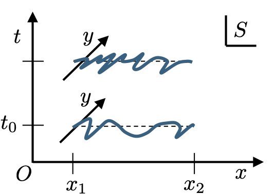
The equation of motion describing the transverse motion \(y(t,x)\) along the \(y\)-axis of this plucked string is the wave equation:
\[\left(\frac{\partial^2}{\partial t^2}-c_s^2\frac{\partial^2}{\partial x^2}\right)y(x,t) = 0, \tag{1.1}\]
where \(c_s\) is the wave speed of the string. If we now follow the same steps as with the two masses and transform the variables and derivatives into frame \(\bar{S}\) we obtain:
\[\left[\left(1-\frac{v^2}{c_s^2}\right)\frac{\partial^2}{\partial \bar{x}^2}-\frac{1}{c_s^2}\frac{\partial^2}{\partial \bar{t}^2} + \frac{2v}{c_s}\frac{\partial^2}{\partial \bar{x}\partial \bar{t}}\right]\bar{y}(\bar{x},\bar{t}) = 0. \tag{1.2}\]
The presence of the mixed derivative term shows that the wave equation is not covariant. This change in the mathematical form of our description does not present any particular issues for the case of a string. After all we know that the wave equation for a string is derived from Newton’s 2nd law, e.g. applied to a chain of coupled masses and then taking the continuum limit. We have shown already that these laws are Galilean covariant between frames. That derivation assumes the string is stationary in the \(x\)-direction. So only in frame \(S\) does the equation of motion of the string take on the simple form of a wave equation.
However, here is a serious problem …
Maxwell’s equations describing the electromagnetic (EM) field in a vacuum tells us (see later) that the electric field \(E(t,x)\) obeys:
\[\left(\frac{\partial^2}{\partial t^2}-c^2\frac{\partial^2}{\partial x^2}\right)E(t,x) = 0, \tag{1.4}\]
where the wave speed is given by
\[c = \frac{1}{\sqrt{\mu_0\epsilon_0}},\]
with \(\mu_0\) and \(\epsilon_0\) being the permeability and permittivity of free space, respectively. This equation and these constants are not pinned to any rest frame of a medium in which these waves propagate (i.e. aether). Indeed the Michaelson-Morley experiment established that no such aether exists.
Consequently, the mathematical form of the wave equation for EM waves must be preserved in all inertial frames. This immediately implies that Galilean relativity is wrong. We need a new type of relativity which can establish the covariance of the wave equation. This is special relativity which is the subject of our next lecture.